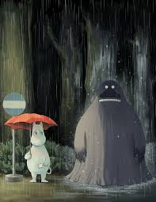

About Groke
Groke is misunderstood, She's absolutely terrifying but she is harmless and maybe just needs a mate. She basically freezes everything until she gets what she wants....legend.
Groke and her friends
Groke's Characteristics
- She's spooky as hell
- She probably knows it
- She likes shiny shells
Groke's friends
Groke has no friends so she bothers the Moomins and their friends all the time. She's great. Click on the links below to read more about them: